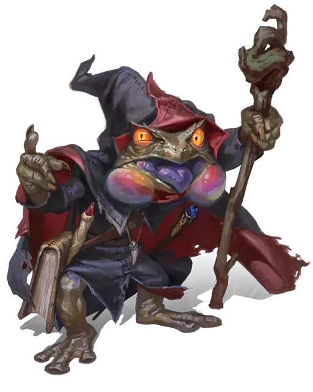

Мургаксор
Murgaxor
Средний Гуманоид (Колдун), нейтрально-злой, именной НИП

Класс Доспеха 16 (кровавая защита)
Хиты 127 (15к8 + 60)
Скорость 30 футов
| мод | спас | ||
|---|---|---|---|
| СИЛ | 11 | +0 | +0 |
| ЛОВ | 14 | +2 | +2 |
| ТЕЛ | 18 | +4 | +8 |
| мод | спас | ||
|---|---|---|---|
| ИНТ | 20 | +5 | +9 |
| МДР | 12 | +1 | +5 |
| ХАР | 12 | +1 | +5 |
Навыки Выживание +5, Медицина +5, Обман +9
Сопротивление урону некротическая энергия
Иммунитет к состояниям истощение
Чувства пассивное Восприятие 11
Языки Общий, и ещё четыре языка
Опасность 9 (5000 опыта)
Бонус мастерства +4
Особенности
Кровавая защита. Пока Мургаксор не носит ни доспехи, ни щит, к КД прибавляется его модификатор Телосложения.
Маска Орика. Мургаксор носит маску Орика. Пока Мургаксор носит эту маску, он не может стать целью магии прорицания или обнаружен с помощью магических сенсоров прорицания, и он добавляет удвоенный бонус мастерства к своим проверками Харизмы (Обман) (бонус уже включён).
Ощущение крови. Пока Мургаксор не ослеплен, он может видеть любое существо, которое не является Нежитью или Конструктом, в пределах 60 футов от себя, даже через полное укрытие, сильно заслонённые области, невидимость или любые другие явления, которые мешают видеть.
Действия
Мультиатака. Мургаксор совершает две атаки Кровавой плетью.
Кровавая плеть. . Рукопашная атака заклинанием: +9 к попаданию, досягаемость 10 футов, одна цель. Попадание: 21 (3к10 + 5) урона некротической энергией. Если целью является существо, оно не может восстанавливать хиты до начала следующего хода Мургаксора.
Кипящая кровь (Перезарядка 4-6). Мургаксор выбирает точку в пределах 150 футов и сфера радиусом 20 футов с центром в этой точке заполняется взрывом обжигающего кроваво-красного тумана. Каждое существо по выбору Мургаксора, которое он может видеть в этой области, должно совершить спасбросок Телосложения Сл 17. При провале существо получает 38 (7к10) урона некротической энергией и становится недееспособным до конца своего следующего хода. В случае успеха существо получает половину этого урона и остаётся дееспособным. Существо умирает, если этот урона некротической энергией уменьшает его хиты до 0.
Действия логова
При значении инициативы «20» (проигрыш при ничьей), Мургаксор может совершить действие в логове, чтобы создать один из следующих магических эффектов; он не может использовать один и тот же эффект два раунда подряд:
Глиняное чудище. Глиняный голем [clay golem] поднимается из пола в свободном пространстве в пределах 15 футов от ритуального круга. Голем подчиняется командам Мургаксора, его ход начинается при значении инициативы «10» (проигрыш при ничьей), сражается до тех пор, пока не будет уничтожен, и через 1 час превращается в груду безжизненной глины.
Земляной кулак. Средний кулак утрамбованной земли поднимается из пола в свободном пространстве, которое Мургаксор может видеть в пределах 30 футов от себя. Кулак атакует, когда одно существо по его выбору находится в пределах 4 футов от кулака. Кулак имеет бонус +11 к попаданию, и при попадании цель получает 13 (3к8) дробящего урона и становится схваченным (Сл высвобождения 15). Кулак исчезает, если бросок атаки не попадает или если захват заканчивается. Когда кулак исчезает, это действие логова перезаряжается, позволяя Мургаксору использовать его снова.
Некротический всплеск. Щупальца некротической энергии вырываются из ритуального круга и набрасываются на любое количество существ, которых Мургаксор может увидеть в пределах 15 футов от круга. Каждая цель должна преуспеть в спасброске Ловкости Сл 15, иначе она получит 5 (1к10) урона некротической энергией и не сможет восстановить хиты до начала своего следующего хода.
Призыв мефитов. Мургаксор призывает четырех грязевых мефитов [mud mephit], которые появляются в незанятых пространствах в пределах 15 футов от ритуального круга. Мефиты подчиняются командам Мургаксора, их ход начинается при значении инициативы «15» (проигрыш при ничьей) и сражаются до тех пор, пока не будут уничтожены.
Описание
После того, как персонажи выполнили задание, профессор Лэнг вручает им файл с информацией, которую преподаватели собрали о Мургаксоре из университетских архивов. Расскажите игрокам следующее, чтобы дать им представление об этом злом заклинателе:
- Мургаксор - жаболюд, который посещал Стриксхейвен 200 лет назад. Он был членом факультета Визерблум, хотя нет никаких записей о том, что он участвовал в каких-либо мероприятиях или работал в кампусе.
- Злобный, эгоистичный заклинатель, Мургаксор неоднократно подвергался порицанию за пренебрежение правилами безопасности, колдовство и проклятия сверстников, а также за использование вредной магии во время пребывания в кампусе.
- Сотрудники университета считают, что Мургаксор начал свои незаконные эксперименты с магией, высасывающей жизнь, вскоре после того, как он поступил в качестве студента.
- На третьем курсе Мургаксор был исключен за использование магии, высасывающей жизнь, когда это привело к смерти другого студента. Мургаксор сбежал до того, как его смогли передать властям.
- В течение нескольких лет после его исключения Мургаксора, как сообщается, видели на окраинах кампуса, в частности в Осоковой топи и на Задерживающем болоте. Власти полагали, что что-то в этих местах усиливало его магию, но его так и не поймали. Наблюдения вскоре прекратились, и больше никаких свидетельств присутствия Мургаксора обнаружено не было. Официальные лица предположили, что он мертв, и вычеркнули Мургаксора из записей Стриксхейвена, поскольку считали его пятном на репутации университета.